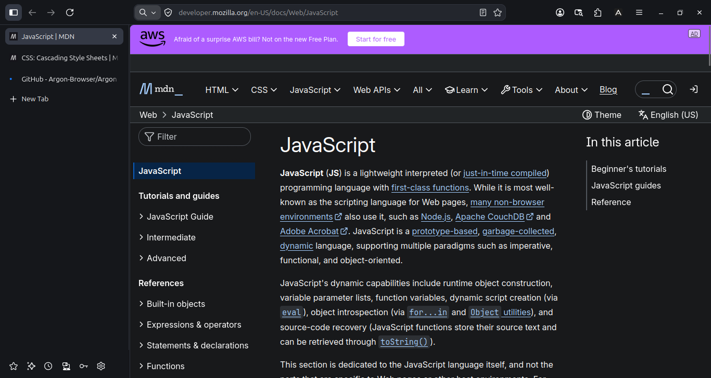

Navegador focado em privacidade, sem distrações
O Argon desativa toda telemetria de fábrica, isola seu perfil e alterna entre abas verticais e horizontais em uma interface plana e silenciosa. Por padrão.
Simples, na orientação que você preferir
O Argon foi desenhado para sair do seu caminho. Uma barra superior plana de 48 px sem bordas tridimensionais nem botões supérfluos.
Use abas verticais em uma lateral de 240 px ou abas horizontais clássicas, com temas Claro, Escuro ou sincronizado ao sistema.
Toda captura ao lado vem direto do binário real rodando no Linux.

Inspecione qualquer extensão antes de abrir no perfil
Além de suportar extensões nativas do Firefox, o Argon inclui um analisador estático para arquivos manifest.json MV2 e MV3. Tudo roda localmente via descritores seguros, sem conceder permissões nem executar scripts.
Explore os exemplos ao lado ou navegue pelo catálogo de referência com 50 extensões do AMO.
Transparente e código aberto
Todos os componentes do Argon são abertos sob MIT e MPL 2.0. O desenvolvimento acontece em público, de commits a artefatos de CI.
Em vez de esconder mudanças em uma árvore monolítica do Firefox, cada ajuste é declarado em config/overlay.json sobre uma revisão fixada por SHA-256.
Use, audite linha por linha, compile do zero ou contribua.
A janela mais calma, por padrão
O Argon remove ruídos da moldura do navegador para que você foque apenas no conteúdo da página.
Arraste o controle deslizante para comparar as capturas nativas do Argon no Linux entre abas verticais, horizontais e temas.

Identidade visual aberta e geométrica
Desenhada sobre um grid de 128 unidades em Argon Obsidian (#1E1E1E) e Argon Ivory (#FBF8F4), livre para artigos, análises e imprensa.
Pronto quando você quiser
O Argon usa um perfil próprio em ~/.argon/argon e deixa seu navegador atual intacto. Experimente o pacote Flatpak da Fase 1 no Linux ou compile a partir do código fixado.
npm run doctor && npm run fetch && npm run apply && npm run build:artifact
npm run bootstrap && npm run build && npm run package && npm run flatpak
npm test && npm run test:python
Ainda mais detalhes sobre o Argon
O Argon coleta algum dado pessoal ou telemetria?
MOZ_TELEMETRY_REPORTING nem MOZILLA_OFFICIAL, e argon-prefs.js desativa envio de dados à Mozilla, Health Report, experimentos Normandy e estudos Shield de fábrica. Tanto o crash reporter quanto o atualizador em segundo plano vêm desligados.
O Argon altera ou bloqueia meu perfil atual do Firefox?
MOZ_APP_PROFILE=argon, MOZ_APP_VENDOR=Argon e canal de janelas próprio (WM_CLASS=argon). Ele cria e usa ~/.argon/argon sem jamais tocar em ~/.mozilla/firefox.
O Argon suporta extensões do Firefox e do Chrome?
MOZ_APP_ID do Gecko. Para pacotes Chromium MV2/MV3, o Módulo 1 já entrega auditoria estática de manifest.json; shims de API de runtime estão planejados para a Fase 4.
O que já está verificado hoje versus planejado para as próximas fases?
Planejado: Paleta de Comandos e
about:argon (Fase 2), Workspaces isolados e suspensão de abas (Fase 3) e ponte de runtime MV3 com testes nas 50 extensões do catálogo (Fase 4).
Como o Argon acompanha atualizações de segurança do Firefox?
config/firefox.lock.json, que fixa a revisão upstream e o hash SHA-256 de cada arquivo tocado pelo Argon. Quando uma nova revisão do Firefox é adotada, npm run apply valida cada hash atomicamente antes de aplicar os patches declarativos.
O Argon é gratuito e 100% código aberto?
MIT e os arquivos derivados do Firefox/Gecko permanecem sob MPL 2.0, sem camadas pagas, sem adware e sem serviços proprietários ocultos.